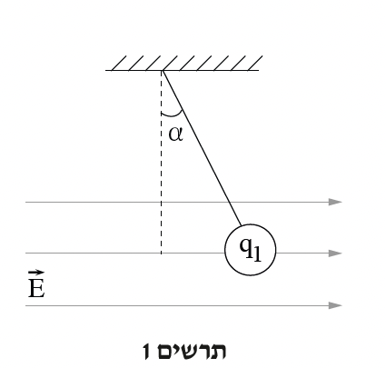
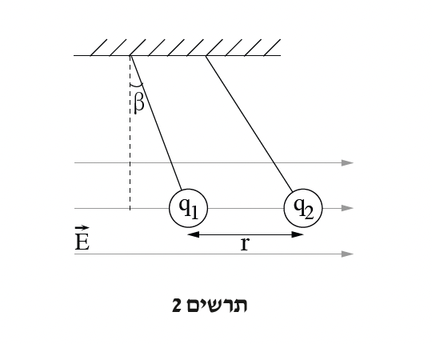
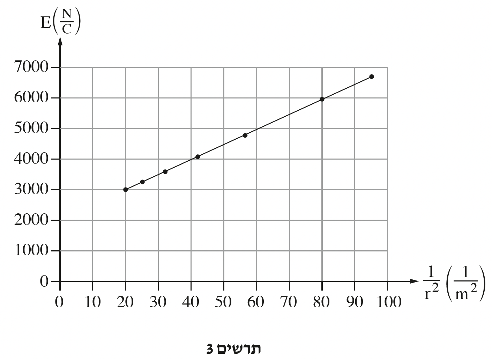

שאלה 1
מורה לפיזיקה ערך שני ניסויי הדגמה באלקטרוסטטיקה.
בניסוי הראשון תלה המורה כדור פלסטיק שמסתו m בקצה חוט המחובר לתקרה, והטעינו במטען q1.
באזור הכדור הפעיל המורה שדה חשמלי אחיד ואופקי E שכיוונו ימינה. בעקבות הפעלת השדה, הכדור המחובר לחוט סטה ימינה בזווית α יחסית לאנך, כמתואר בתרשים 1.
א.(1) פתחו ביטוי הקושר בין זווית הסטייה α ובין עוצמת השדה החשמלי E.
השתמשו בפרמטרים m, q1 ובקבועים פיזיקליים בהתאם לצורך.
(2) נתון: מסת הכדור היא m = 0.2gr .
כאשר עוצמת השדה החשמלי הינה E = 5700 N/C , סטה הכדור המחובר לחוט בזווית α = 14° .
קבעו את הסימן של המטען החשמלי q1 , וחשבו את גודלו של המטען באמצעות הביטוי שפיתחתם.
נמקו את תשובתכם.
(7 נקודות)

בניסוי השני תלה המורה בתוך השדה E כדור פלסטיק נוסף בעל אותה מסה m, הטעון במטען חיובי q2 .
בעקבות זאת השתנתה זווית הסטייה של הכדור הראשון (הטעון במטען q1) ל-β, המרחק בין מרכזי הכדורים הוא r , כמתואר בתרשים 2.
במהלך הניסוי השני המורה שינה כמה פעמים את המרחק בין מרכזי הכדורים, ובכל פעם הוא התאים את עוצמת השדה החשמלי E כך שגודל זווית הסטייה β של הכדור הראשון נשאר קבוע.
בכל פעם רשם המורה את המרחק r בין מרכזי הכדורים ואת עוצמת השדה החשמלי E המתאימה.
בכל מדידה הקפיד המורה שהגובה של מרכזי הכדורים יישאר קבוע (באמצעות שינוי אורך החוט של הכדור השני).
ב.סרטטו תרשים של הכוחות הפועלים על הכדור הטעון במטען q1 בניסוי השני (תרשים 2). כתבו ליד כל וקטור את שם הכוח. עבור כל אחד מן הכוחות ציינו את הגורם המפעיל אותו.
(5 נקודות)

ג.הראו שביטוי המתאר את עוצמת השדה החשמלי E המופעל, כתלות במרחק r בין מרכזי הכדורים, הוא
E = k q2
r2 + mg
q1 tan β
(8 נקודות)
בגרף שבתרשים 3 מוצג גודל השדה החשמלי כתלות ב- 1
r2 .
ד.היעזרו בגרף ומצאו את גודל המטען q2 ואת זווית הסטייה β של הכדור הראשון.
(8 נקודות)
ה.אחת התלמידות בכיתה הציעה להטעין את הכדור השני במטען q2 אחר, כך ששני הכדורים יסטו ימינה באותה זווית
יחסית לאנך. האם זה אפשרי?
לפניכם חמש תשובות 1–5. קבעו מהי התשובה הנכונה, ונמקו את קביעתכם.
- 1. כן. במקרה זה q2 > q1 .
- 2. כן. במקרה זה q2 = q1 .
- 3. כן. במקרה זה q2 < q1 .
- 4. כן. שוויון זוויות יתקיים עבור כל ערך של q2 .
- 5. לא. אי אפשר.
(5.33 נקודות)
